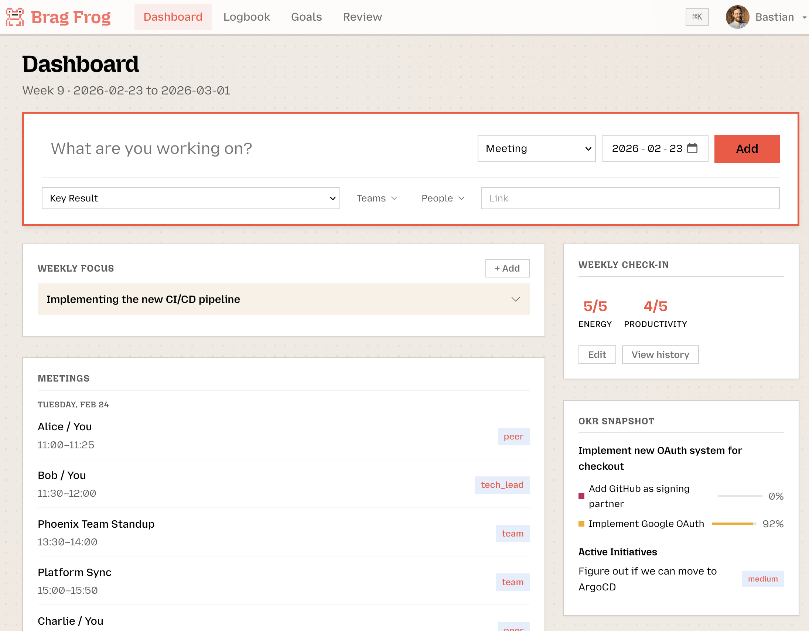

Brag Frog
Brag Frog
Own your week,
own your review.
The daily workflow tool for engineering teams. Sync your work, prep meetings with AI, track goals, and generate self-review drafts — all in one place.
